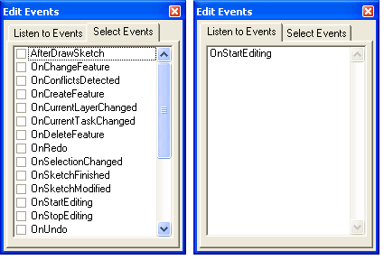

Edit event listener
Purpose
The add-in in this sample provides the ability to understand when various edit events are fired in response to changes in the editing environment or user actions. Using this sample can help you determine which events are appropriate to listen for in various situations, and understand what causes an event to fire.
Usage
- Start Visual Studio, open the solution file, and build the project.
- Start ArcMap, click the Customize menu, and click Add-In Manager. The Add-In Manager dialog box opens.
- Using the Browse for Add-In command, browse to the location of the add-in and select the .esriAddIn file located in the projects bin\Debug folder.
- On the Customize dialog box, drag the Edit Events command from the Add-In Controls category to a toolbar.
- Add one or more editable data sources to ArcMap.
- Click the Edit Events command. The Edit Events window opens.
- Click the Select Events tab. See the following screen shot on the left.
- Select one or more edit events in the list for which you want to receive notification, then click the Listen to Events tab.
- Perform one or more actions in the editor. Events that fire as a result of the action are listed on the Listen to Events tab. See the following screen shot on the right.
- Right-click in the list to clear it.

Screen shot showing the Select Events and Listen to Events tabs.
See Also
Working with editing events
Licensing
| Development licensing | Deployment licensing |
|---|
| ArcGIS for Desktop Basic | ArcGIS for Desktop Basic |
| ArcGIS for Desktop Standard | ArcGIS for Desktop Standard |
| ArcGIS for Desktop Advanced | ArcGIS for Desktop Advanced |